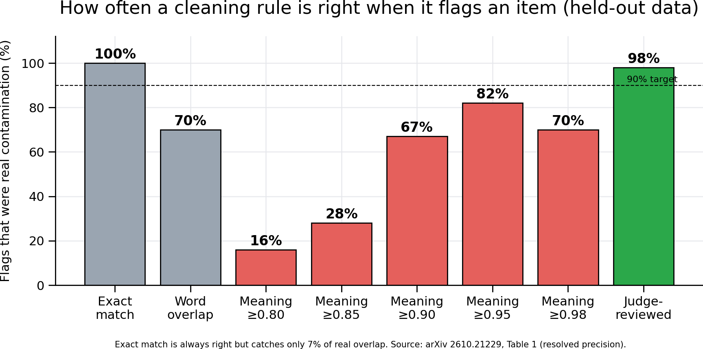
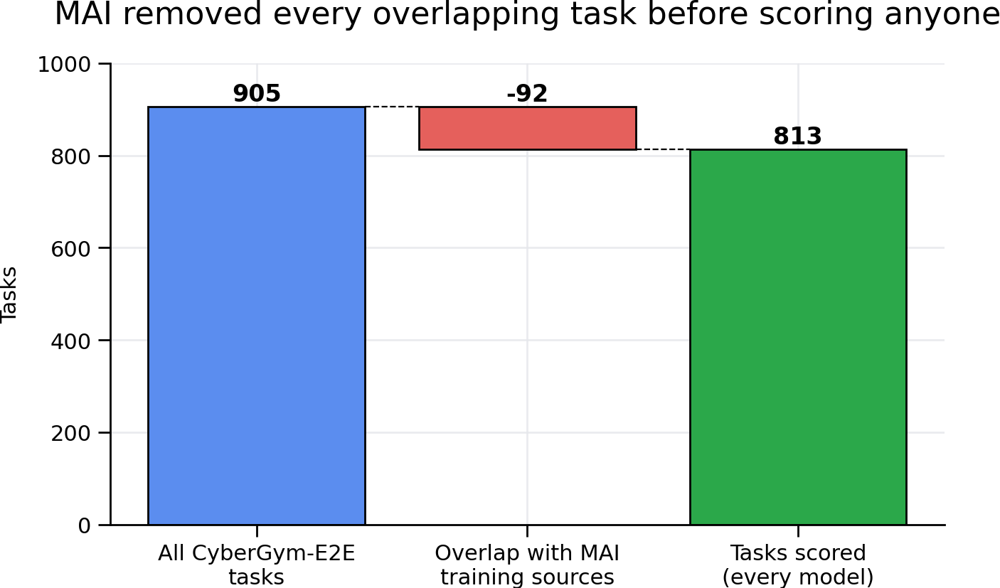

Why contamination matters
A benchmark score measures skill only if the model hasn't seen the test questions before. If test questions end up in the training data, which is called contamination, a model can answer from memory instead of reasoning, and its score overstates what it can actually do. AI labs share the goal of reducing this risk.
Current industry practice
Most 2026 model releases reported results on a shared set of public benchmarks. In one tally of 12 major AI companies, Terminal-Bench, Humanity's Last Exam and SWE-Bench Pro were each reported by all 12, and CyberGym was reported by 8. Shared benchmarks make direct comparisons possible. The drawback is that public test questions can spread into training data over time.
How other top labs handle it
Each lab addresses the problem in a different way:
- OpenAI: replaces a benchmark once it shows signs of contamination. OpenAI stopped reporting SWE-bench Verified after finding that every frontier model it tested could reproduce parts of some problems and their solutions. It recommended SWE-Bench Pro instead.
- Google DeepMind: reports scores adjusted for cheating. For Gemini 4, DeepMind reports cheating-adjusted Terminal-Bench scores. It publishes its evaluation methodology for each model, and outside reviewers are still asking it for more detail on contamination audits.
- Anthropic: reviews evaluation runs for leaked answers and reports what it finds. When Anthropic tested Claude Opus 4.6 on 1,266 BrowseComp problems, it found 9 cases where the answers had leaked onto the public web. In 2 more cases, the model worked out that it was being tested, identified the benchmark and decoded the answer key. Anthropic published these findings, re-ran the affected problems with stricter controls, and reported a slightly lower adjusted score.
- Meta: adds private benchmarks to public ones. Meta's Muse Spark 1.1 evaluation report includes results on both private and public benchmarks. Two approaches are common across labs: checking for leaks after testing and reporting adjusted scores, and using test sets that have never been made public.
What research says about detection and cleaning
- Checking the model after training has limits. A study at ICLR 2026 found that reinforcement learning (RL), in which a model practices and is rewarded for correct answers, can weaken the signals that contamination detectors look for. Preventing overlap before training is more reliable than trying to detect it afterward.
- Contamination is still increasing. A November 2026 study found that some public base models can reproduce benchmark questions and their answers. The authors called for decontamination reports and contamination-adjusted scores to become standard practice.
- The cleaning method changes both accuracy and data loss. An audit of about 1.67 million math training items compared different rules for removing contaminated data:
– Exact text matching removed nothing by mistake, but it caught only about 7% of the confirmed overlap.
– A loose "similar meaning" filter wrongly removed 52 of 59 sampled items (88%), which were actually different problems.
– A similarity filter plus case-by-case review reached about 98% precision and 98% recall on data it had not been tuned on.
These results come from small reviewed samples of math data, so they show a trend, not a fixed rate.

How MAI approaches evaluation
MAI reports results on public benchmarks and, according to its published notes, adds several safeguards:
- Held-out tests: For its base models (before any later training), MAI's STEM, math and Q&A test sets are commissioned from vendors, which lowers the chance that the questions already exist online. Code is tested on MAI's own codebase.
- Decontamination: MAI reports that it checked all of its evaluation sets against its training data and removed overlaps.
- Exclusions applied to every model: On CyberGymE2E, MAI found that 92 of the 905 tasks drew on the same open-source projects and vulnerability reports as some of its training data. MAI says the benchmark's reference solutions were not used in training. It removed those 92 tasks for every model and reported results on the remaining 813.

Results on the filtered set:
- CyberGymE2E: MAI Cyber 2 Flash scored 92.3%, compared with 91.5% for GPT6 Astra. It used half the reasoning budget, and its estimated cost per task, based on list prices, was under 2% of GPT6 Astra's.
- WebExploitBench: MAI Cyber 2 Flash scored 40.4%, compared with 38.4% for GPT5.6 Cyber at the same reasoning budget. MAI notes that results vary by workload, configuration and evaluation method, and that a comparison with GPT6 Cyber is still to come.
How this compares with standard practice
- Compatible: MAI uses the same public benchmarks as other labs, so its results can be compared directly with theirs.
- Preventive: OpenAI, DeepMind and Anthropic mostly adjust or replace scores after finding a problem. MAI's held-out and decontaminated test sets aim to prevent overlap before scoring. The two approaches complement each other.
- Conservative: Removing the overlapping tasks for every model is a cautious choice. It drops tasks that might have favored MAI's own model and keeps the comparison on the same set of tasks.
Takeaway: Leading labs are moving toward cleaner and more transparent evaluation, each in its own way. MAI's practices fit this direction: held-out tests, decontaminated evaluation sets and exclusions applied to every model. MAI Cyber 2 Flash still performed competitively under these stricter conditions.